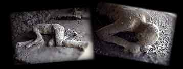

|
The carts that we had ordered brought were moving in
opposite directions, though the ground was perfectly flat,
and they wouldn't stay in place even with their wheels
blocked by stones. In addition, it seemed as though the sea
was being sucked backwards, as if it were being pushed back
by the shaking of the land. Certainly the shoreline moved
outwards, and many sea creatures were left on dry sand.
Behind us were frightening dark clouds, rent by lightning
twisted and hurled, opening to reveal huge figures of flame.
These were like lightning, but bigger. At that point the
Spanish friend urged us strongly: "If your brother and uncle
is alive, he wants you to be safe. If he has perished, he
wanted you to survive him. So why are you reluctant to
escape?" We responded that we would not look to our own
safety as long as we were uncertain about his. Waiting no
longer, he took himself off from the danger at a mad pace.
It wasn't long thereafter that the cloud stretched down to
the ground and covered the sea. It girdled Capri and made it
vanish, it hid Misenum's promontory. Then my mother began to
beg and urge and order me to flee however I might, saying
that a young man could make it, that she, weighed down in
years and body, would die happy if she escaped being the
cause of my death. I replied that I wouldn't save myself
without her, and then I took her hand and made her walk a
little faster. She obeyed with difficulty, and blamed
herself for delaying me. Now came the dust, though still thinly. I look back: a dense cloud looms behind us, following us like a flood poured across the land. "Let us turn aside while we can still see, lest we be knocked over in the street and crushed by the crowd of our companions." We had scarcely sat down when a darkness came that was not like a moonless or cloudy night, but more like the black of closed and unlighted rooms. You could hear women lamenting, children crying, men shouting. Some were calling for parents, others for children or spouses; they could only recognize them by their voices. Some bemoaned their own lot, other that of their near and dear. There were some so afraid of death that they prayed for death. Many raised their hands to the gods, and even more believed that there were no gods any longer and that this was one last unending night for the world. Nor were we without people who magnified real dangers with fictitious horrors. Some announced that one or another part of Misenum had collapsed or burned; lies, but they found believers. It grew lighter, though that seemed not a return of day, but a sign that the fire was approaching. The fire itself actually stopped some distance away, but darkness and ashes came again, a great weight of them. We stood up and shook the ash off again and again, otherwise we would have been covered with it and crushed by the weight. I might boast that no groan escaped me in such perils, no cowardly word, but that I believed that I was perishing with the world, and the world with me, which was a great consolation for death. At last the cloud thinned out and dwindled to no more than smoke or fog. Soon there was real daylight. The sun was even shining, though with the lurid glow it has after an eclipse. The sight that met our still terrified eyes was a changed world, buried in ash like snow. We returned to Misenum and took care of our bodily needs, but spent the night dangling between hope and fear. Fear was the stronger, for the earth was still quaking and a number of people who had gone mad were mocking the evils that had happened to them and others with terrifying prognostications. We still refused to go until we heard news of my uncle, although we had felt danger and expected more. You will read what I have written, but will not take up your pen, as the material is not the stuff of history. You have only yourself to blame if it seems not even proper stuff for a letter. Farewell. |
Pliny the Younger's Letter, text from the Pompeii Project
Pictures of Pompeii victims, from photos taken in 1992 by Werner Keller.
If this historic account shows you
the impact of a volcano on human life, continue on ...